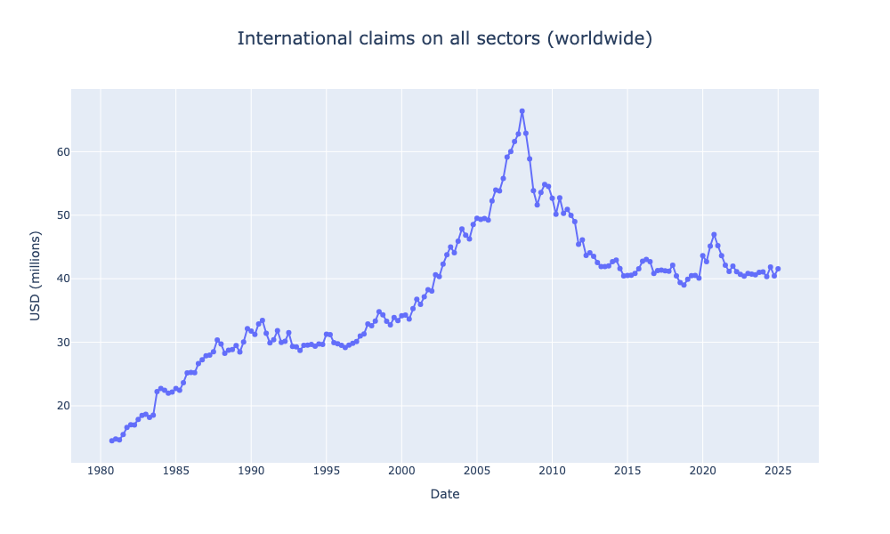
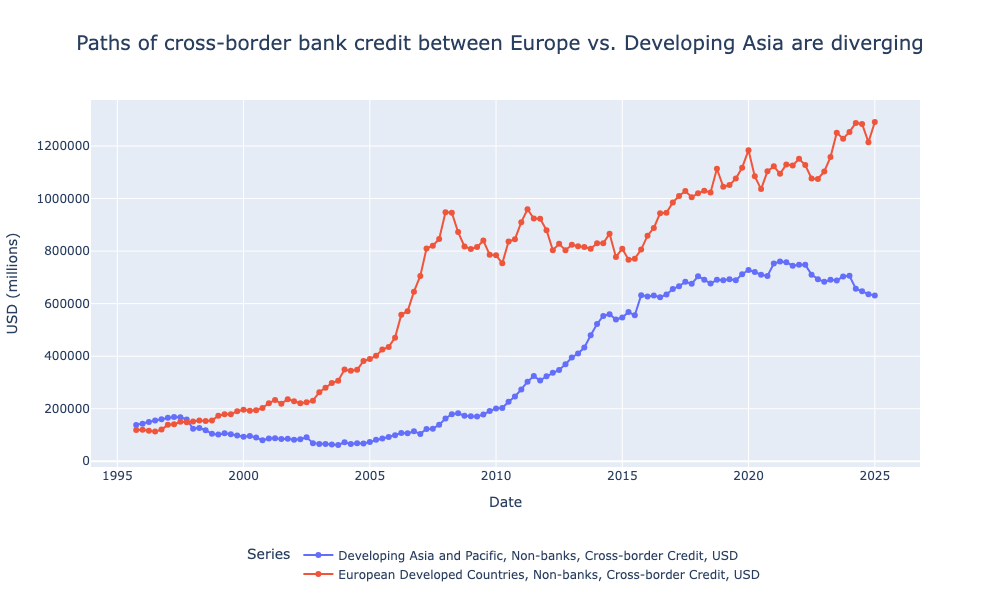
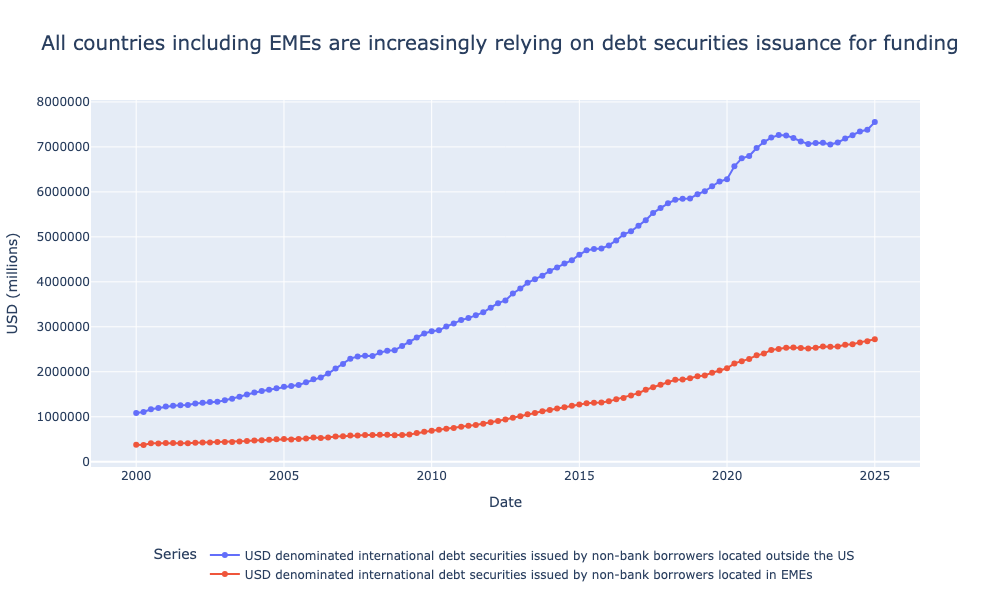

The Changing Nature of Cross-Border Credit: Through the BIS API and the getBISy Package#
It is well-known that cross-border capital flows can have destabilising consequences for local and global financial systems, illustrated through histories of financial crises in the 20th- and 21st -centuries.
The Asian Financial Crisis 1997-98 showed that countries running even modest fiscal and current account deficits - and no twin deficits at all, in the case of Singapore - be destabilised by sudden capital outflows quite divorced from any perceptible fundamentals aside from a latent notion of global ‘risk-appetite’.
Indeed, large volumes of capital inflows, whilst arising initially from seemingly imperceptible sources, lead to self-fulfilling circles of rising asset prices, and increased collateral values that fuel further borrowing and ultimately sow the seeds of a sudden reversal and a financial and currency crisis. This is at least partially the story of the Global Financial Crisis 2007-08 (‘GFC’).
But if we suppose the term ‘cross-border lending’ fully encapsulates the anatomy of cross-border funding then we might miss an important story regarding the composition of this cross-border lending: namely, in the distinction between funding via cross-border bank lending (‘CBL’) and international debt securities (‘IDS’) issuance.
Indeed, as BIS economists Torsten Ehlers, Bryan Hardy, and Patrick McGuire point out in an [article])(https://www.bis.org/publ/qtrpdf/r_qt2503f.htm) from the first quarterly review this year (although they were by no means the first to make this point), cross-border capital flows in the pre-GFC period consisted of a particularly high proportion of bank lending. Now, however, the authors note, cross-border credit is increasingly a phenomenon of international debt issuance.
I’d like to use this post as an opportunity to elaborate upon the key points of this research using a new Python package that I’ve recently published - getBISy.
The Evolving Dimensions of Cross-Border Capital Flows: Bank Lending#
After a rising rapidly from the turn of the millennium to the GFC 2007-08, total global cross-border credit was essentially flat up in the following decade up to the Covid-19 Pandemic of 2020, and growth since then has essentially flatlined in great contrast to the few years preceding the crisis.
import getBISy.data as data
import getBISy.enums as enums
df = data.get_global_liquidity_data(
freq='Q',
currency='TO1',
borrowing_country=enums.Region.LiquidityAllCountries,
borrowing_sector=enums.Sector.LiquidityAllSectors,
lending_sector=enums.Sector.Banks,
position_type=enums.PositionType.CrossBorderAndLocal,
instrument_type=enums.Instrument.All,
unit_of_measure=enums.UnitOfMeasure.PercentageOfGDP
)

At the same time, however, there are important regional differences not picked up in the preceding aggregate view.
Take the example of the contrasting experiences of Developing Asia and Developed Europe. Whilst being essentially flat in the period up to the GFC, local credit extensions (that is, from local lenders to local borrowers) in Developing Asia began to rise consistently following the crisis, barely being interrupted by the Covid-19 pandemic. In fact, this rise seems to be almost a mirror image of the corresponding fall in the same metric for Developed Europe.
import getBISy.data as data
import getBISy.enums as enums
s1 = data.get_global_liquidity_data(freq='Q',
currency='TO1',
borrowing_country=enums.Region.DevelopingAsiaAndPacific,
borrowing_sector=enums.Sector.NonFinancialPrivateSector,
lending_sector=enums.Sector.Banks,
position_type= enums.PositionType.Local,
instrument_type=enums.Instrument.Credit,
unit_of_measure=enums.UnitOfMeasure.PercentageOfGDP
)
s2 = data.get_global_liquidity_data(freq='Q',
currency='TO1',
borrowing_country=enums.Region.EuroArea,
borrowing_sector=enums.Sector.NonFinancialPrivateSector,
lending_sector=enums.Sector.Banks,
position_type= enums.PositionType.Local,
instrument_type=enums.Instrument.Credit,
unit_of_measure=enums.UnitOfMeasure.PercentageOfGDP
)

A similar pattern is seen when viewing the direct counterpart of local bank lending: cross-border bank lending. The rise but subsequent stagnation of cross-border bank lending in Developed Europe following the GFC is well-known. But it was in fact at this point that cross-border bank lending to emerging Asia began to rise; indeed, the stagnation of such lending in Developed Europe can in some ways be viewed as having been at least partially compensated for by a rise in Developed Asia.
But whilst cross-border bank lending in both regions gradually increased together in the decade following the financial crisis, there is some evidence now that the Covid-19 pandemic of 2020 might have marked a new structural break in these trends. In the past 5 years, cross-border bank lending has steadily increased for Developed Europe, but decreased for Developing Asia.
import getBISy.data as data
import getBISy.enums as enums
s1 = data.get_locational_banking_data('Q',
enums.LbsMeasure.Stocks,
enums.Position.Claims,
enums.Instrument.LoansAndDeposits,
'USD',
enums.CurrencyType.All,
'5J',
enums.Institution.All,
'5A',
enums.Sector.NonBanks,
enums.Region.DevelopingAsiaAndPacific,
enums.PositionType.CrossBorder)
s2 = data.get_locational_banking_data('Q',
enums.LbsMeasure.Stocks,
enums.Position.Claims,
enums.Instrument.LoansAndDeposits,
'USD',
enums.CurrencyType.All,
'5J',
enums.Institution.All,
'5A',
enums.Sector.NonBanks,
enums.Region.EuropeanDevelopedCountries,
enums.PositionType.CrossBorder)

The Evolving Dimensions of Cross-Border Capital Flows: International Debt Issuance#
The international funding model in the post-GFC period has instead been characterised international debt issuance, particularly of USD-denominated debt. This story is true in both all countries in the aggregate, but also when zoning on Emerging Market Economies (‘EMEs’) in particular.
import getBISy.data as data
import getBISy.enums as enums
all_countries_debt_securities = data.get_global_liquidity_data(
freq='Q',
currency='USD',
borrowing_country=enums.Region.AllCountries,
borrowing_sector=enums.Sector.NonBanks,
lending_sector=enums.Sector.LiquidityAllSectors,
position_type=enums.PositionType.CrossBorderAndLocal,
instrument_type=enums.Instrument.Debt,
unit_of_measure=enums.UnitOfMeasure.USD
)
emerging_markets_debt_securities = data.get_global_liquidity_data(
freq='Q',
currency='USD',
borrowing_country=enums.Region.EmergingAndDevelopingEconomies,
borrowing_sector=enums.Sector.NonBanks,
lending_sector=enums.Sector.LiquidityAllSectors,
position_type=enums.PositionType.CrossBorderAndLocal,
instrument_type=enums.Instrument.Debt,
unit_of_measure=enums.UnitOfMeasure.USD
)

An article in the BIS’s most recent Quarterly Review pointed out there is an important difference between the private and government sectors in relation to the currency composition of international debt issuance. Whilst the denomination of private sector debt in EMEs tends still to be USD denominated, governments have tended to issue local currency debt. These can be viewed through the BIS Data Portal’s Debt Securities Statistics data.
What are the consequences of this transition? For the EME private sector, the song remains the same: to the extent that these liabilities might remain unhedged a currency mismatch on their balance-sheets leaves them exposed to local currency depreciation.
For EME governments who now increasingly have local-currency denominated (rather than USD denominated) liabilities, and local currency depreciation would no longer lead to the vicious circle of depreciation precipitating foreign capital outflows which beget further depreciation. That is to say, progress has been made in overcoming the ‘Original Sin’ highlighted by Eichengreen & Hausmann in their seminal 1999 paper.
The negative consequences of exchange-rate depreciation has, however, now been shifted to creditors - posing a potential vicious circle from currency mismatch even for EME borrowers without foreign currency debt. Local currency depreciation manifests as mark-to-market losses on foreign lenders’ balance-sheets, triggering selloffs and ex post hedging that further drives down local asset prices including the currency.
The ‘getBISy’ Python package#
For researchers in international finance the BIS Stats API is an excellent source of data, providing access to a trove of unique datasets on international financial statistics underpinning some of the most interesting papers on these topics. Until now, however, I don’t believe there has existed a Python package that leverages this API to provide a more intuitive programmatic interface (this data can be easily, manually accessed through Data Portal website) to this data.
getBISy allows researchers and developers to obtain BIS data through intuitive Python functions, rather than having to work out the GET requests, or manually download the datasets on the website.
As of today (15th September 2025), one can use the package to obtain data on 5 different topics in the Data Portal: - Policy Rates - Exchange Rates - Locational Banking Statistics - International Debt Securities - Global Liquidity
This post has made use of data in the Locational Banking Statistics and Global Liquidity topics in particular, whilst an extension to the current library to support retrieving data on debt securities is currently in development.
Until next time, Matt